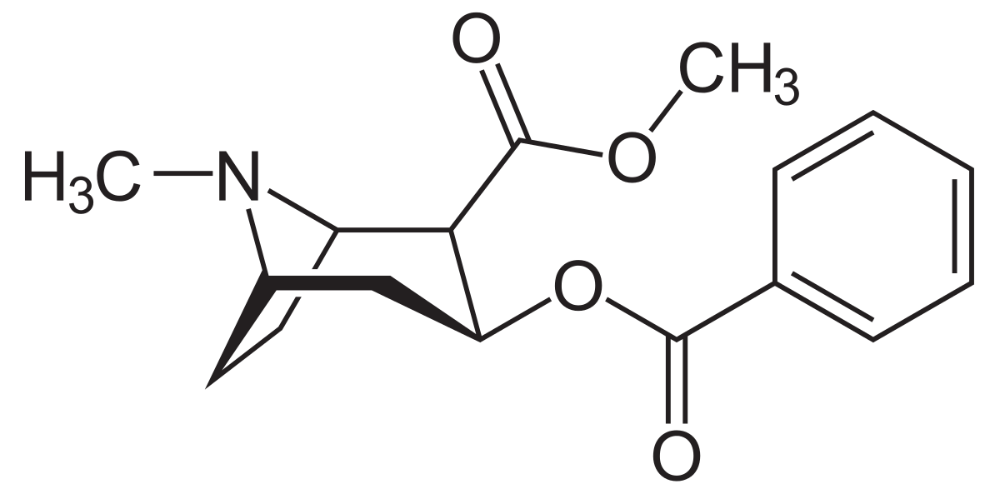
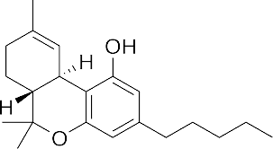

Drug Database
Methamphetamine
Methamphetamine is a powerful, highly addictive stimulant that affects the central nervous system. Crystal methamphetamine is a form of the drug that looks like glass fragments or shiny, bluish-white rocks. There are currently no government-approved medications to treat methamphetamine addiction.The most effective treatments for methamphetamine addiction so far are behavioral therapies, such as:
- cognitive-behavioral therapy, which helps patients recognize, avoid, and cope with the situations likely to trigger drug use.
- motivational incentives, which uses vouchers or small cash rewards to encourage patients to remain drug-free such as vHab.
Cocaine
Cocaine is a powerfully addictive stimulant drug made from the leaves of the coca plant native to South America. Although health care providers can use it for valid medical purposes, recreational cocaine use is illegal. As a street drug, cocaine looks like a fine, white, crystal powder. Street dealers often mix it with other drugs such as the stimulant amphetamine, or synthetic opioids, including fentanyl. Adding synthetic opioids to cocaine is especially risky when people using cocaine don’t realize it contains this dangerous additive. Increasing numbers of overdose deaths among cocaine users might be related to this tampered cocaine. Behavioral therapy may be used to treat cocaine addiction. Examples include:
- Cognitive-behavioral therapy
- Contingency management or motivational incentives—providing rewards to patients who remain substance free
- Therapeutic communities—drug-free residences in which people in recovery from substance use disorders help each other to understand and change their behaviors
- Community based recovery groups, such as 12-step programs
Heroin

Heroin is an opioid drug made from morphine, a natural substance taken from the seed pod of the various opium poppy plants grown in Southeast and Southwest Asia, Mexico, and Colombia. Heroin can be a white or brown powder, or a black sticky substance known as black tar heroin. Naloxone is a medicine that can treat an opioid overdose when given right away. It works by rapidly binding to opioid receptors and blocking the effects of heroin and other opioid drugs. Sometimes more than one dose may be needed to help a person start breathing again, which is why it’s important to get the person to an emergency department or a doctor to receive additional support if needed. Read more in the Substance Abuse and Mental Health Services Administration’s Opioid Overdose Prevention Toolkit.
Marijuana
Marijuana is the most commonly used addictive drug after tobacco and alcohol. Its use is widespread among young people. In 2018, more than 11.8 million young adults used marijuana in the past year. People smoke marijuana in hand-rolled cigarettes (joints) or in pipes or water pipes (bongs). They also smoke it in blunts—emptied cigars that have been partly or completely refilled with marijuana.No medications are currently available to treat marijuana use disorder, but behavioral support has been shown to be effective. Examples include therapy and motivational incentives (providing rewards to patients who remain drug-free). Continuing research may lead to new medications that help ease withdrawal symptoms, block the effects of marijuana, and prevent relapse.